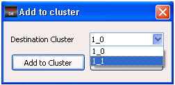

Defects can be
grouped in clusters using Utilities > Auto Cluster in
the Calibre DefectReview menu bar. There are a number of operations
available in the Defect Map window.
Procedure
- In the Defect Map window,
right-click a clustered defect to invoke a popup menu.
- Select an item from the popup
menu. There are a number of cluster-specific operations available.
Table 1. Cluster Specific Menu ItemsMenu Item
|
Description
|
|---|
Add to Cluster
|
Add an isolated defect
to an existing cluster.
|
Merge Cluster
|
Merge one or more clusters
into another cluster.
|
Break Cluster
|
Break a cluster of defects into individual
isolated defects.
|
Remove From Cluster
|
Remove a selected defect from a cluster.
|
Delete All Defects in
This Cluster
|
Remove all defects from
a selected cluster.
|
For the Add to Cluster operation:
Right-click
an isolated defect to invoke the popup menu.
Select Add to cluster.
A dialog box appears with a list of the existing cluster names as
shown in Figure 1.
Figure 1. Add to Cluster Dialog
Box
Choose
the destination cluster from the pulldown list.
Click Add to Cluster.
The isolated defect changes and uses the same color as the cluster
it was added to.
For
the Merge Cluster operation:
Right-click
a defect in a cluster to invoke the popup menu.
Select Merge cluster.
A dialog box appears as shown in Figure 2.
Figure 2. Merge Clusters Dialog
Box
Select
the clusters to be merged from the list. Multiple clusters can also
be selected by holding down the Ctrl key and clicking the additional
clusters.
Select the
Destination Cluster from the drop-down list.
Click OK.
The selected clusters are merged with the destination cluster. All defects
are now grouped under the destination cluster ID.
For example, if you select
clusters 1_1 and 1_2 from the list and select 1_3 as the destination
cluster, then all defects of 1_1 and 1_2 become part of cluster
1_3.
For the Delete All Defects in This Cluster operation:
Right-click
any defect in a cluster to invoke the popup menu.
Select Delete all defects in this cluster.
A message appears prompting you to confirm:
This will remove cluster defects permanently from the list
Click OK to
confirm the deletion.